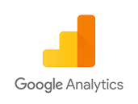

pymagic.marketing_tools.GA¶
-
class
pymagic.marketing_tools.GA[source]¶ Bases:
objectFunctions for interacting with Google Analytics.
Methods
Initializes an Analytics Reporting API V4 service object.
Generates a Google Analytics report.
Initializes an Analytics Reporting API V4 service object.
- Parameters
filename – Filepath to authentication JSON token.
- Returns
An authorized Analytics Reporting API V4 service object.
-
classmethod
ga_pull_metrics(creds, view_id, start_date, end_date, metrics, dimensions=False, filter_dimensions=False, filter_operators=False, filter_expressions=False, filter_excludes=False)[source]¶ Generates a Google Analytics report.
- Parameters
creds – Authentication object.
view_id – Id for organization’s Google Analytics account.
start_date – Reporting start date.
end_date – Reporting end date.
metrics – List of KPIs to compute. Docs: https://ga-dev-tools.appspot.com/dimensions-metrics-explorer/.
dimensions – List of Dimensions to aggregate results by. Docs: https://ga-dev-tools.appspot.com/dimensions-metrics-explorer/.
filter_dimensions – List of Dimensions to filter results by.
filter_operators – List of arithmetical operators to constraint dimensions by.
filter_expressions – List of expressions to constraint dimensions by.
filter_excludes – Whether or not use dimension filter to exclude results.
- Returns
JSON response with report results.